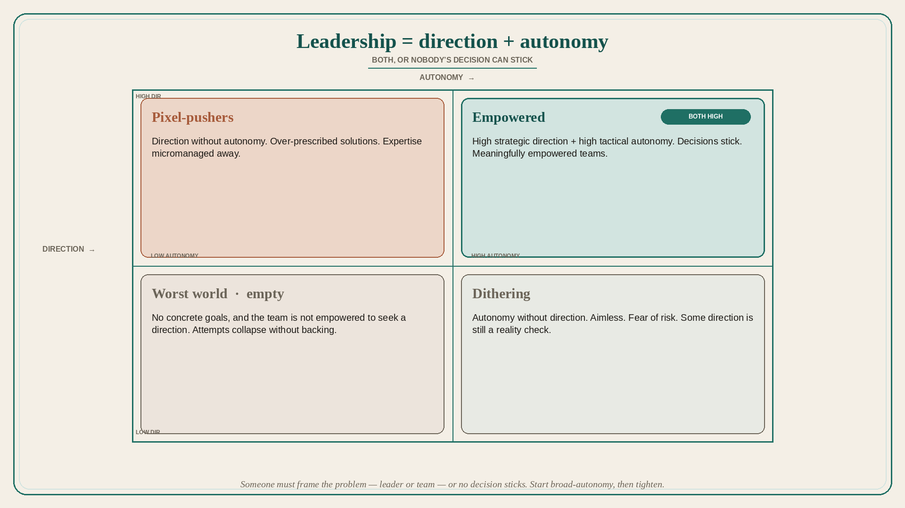

Leadership is direction plus autonomy (both, or decisions do not stick)
Source: Pavel A. Samsonov (@PavelASamsonov)
original post
What it claims
Leadership provides two things: goals and objectives (direction), and freedom of the team to meet those objectives (autonomy). Those factors determine whether it is possible for anybody to make a decision and have that decision stick. Direction without autonomy turns teams into pixel-pushers. Autonomy without direction is productive only with some direction as a reality check; otherwise it is aimless dithering. A high dose of both is necessary for meaningfully empowered teams. The worst of both worlds: no concrete goals, and the team is not sufficiently empowered to seek a direction — tasks are haphazard and any attempt to change things collapses. Someone needs to frame the problem. Fear of risk keeps teams dithering; most decisions are reversible and should be small. Good leaders start with broad autonomy, then progressively define focus as the problem is understood and trust is built.
Why it matters for a PO
POs sit in the middle of direction (PI objectives, stakeholders) and autonomy (the trio). Over-prescribing solutions makes pixel-pushers; no objectives plus no cover produces dithering. The job is an environment where a decision can stick.
3 takeaways
- Direction without autonomy = pixel-pushers; autonomy without direction = dithering; both missing = collapse.
- Someone must frame the problem — leader or team — or no decision sticks.
- Start broad-autonomy, then tighten focus as knowledge and trust grow; keep experiments small and reversible.
Practice this week
For one in-flight item, write the objective (direction) in one sentence and the solution-space the team owns (autonomy) in one sentence. If you listed UI details under direction, move them. Share with the trio and ask what would make the next decision stick.